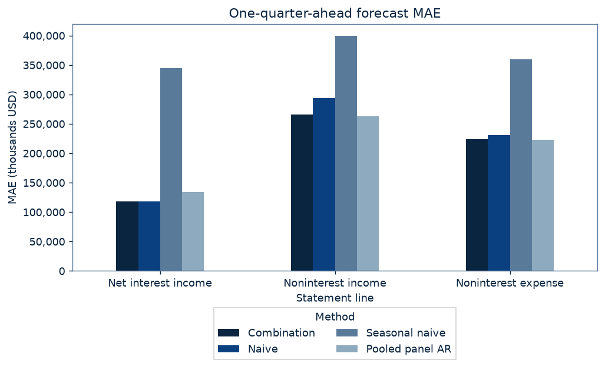
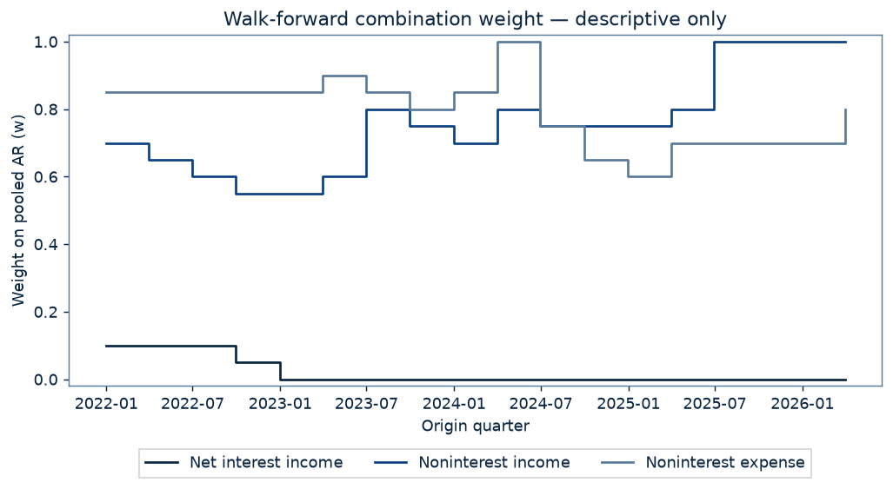

- Pooled AR was chosen as the second component after seeing v1's descriptive tables on this same 2022Q1–2026Q2 window.
- This is the second method scored on the 2022–2026 window.
1 of 3 lines pass the pre-registered bar
No multiplicity adjustment across lines or losses; each line has its own pre-registered verdict. Comparisons with pooled AR and seasonal naive, RMSE, squared-error DM, by-year results, the weight path and fallback counts are descriptive only.
DM differential = L(baseline) − L(combination), error = forecast − actual. Positive t favors the combination. CR1 standard errors cluster by target quarter; two-sided p uses Student t(G−1). There is no correction for dependence between quarters. An undefined p is a FAIL.
Net interest income (BHCK4074)
| Method | Forecasts (count) | MAE (thousands USD) | RMSE (thousands USD) | DM t vs combination · absolute error | DM p vs combination · absolute error | DM t vs combination · squared error | DM p vs combination · squared error |
|---|---|---|---|---|---|---|---|
| Combination | 893 | 118,235 | 277,048 | — | — | — | — |
| Naive | 893 | 117,823 | 275,791 | -1.545 | 0.1408 | -1.432 | 0.1702 |
| Seasonal naive | 893 | 345,029 | 767,684 | 7.292 | 0.0000 | 4.149 | 0.0007 |
| Pooled panel AR | 893 | 134,049 | 303,111 | 2.436 | 0.0262 | 2.139 | 0.0473 |
FAIL: combination MAE 118,235 ≥ naive MAE 117,823 thousands USD; absolute-error DM t = -1.545, two-sided p = 0.1408 (bar ≤ 0.05). The verdict uses unrounded values.
Pooled AR naive fallbacks among evaluated cases: 21 (for these, the combination equals naive). Origins using the fewer-than-minimum-quarters weight: 0. Of 900 selected origin–BHC pairs, 6 lack targets and 1 more lack current or seasonal history; 893 cases are scored.
Noninterest income (BHCK4079)
| Method | Forecasts (count) | MAE (thousands USD) | RMSE (thousands USD) | DM t vs combination · absolute error | DM p vs combination · absolute error | DM t vs combination · squared error | DM p vs combination · squared error |
|---|---|---|---|---|---|---|---|
| Combination | 893 | 266,054 | 733,114 | — | — | — | — |
| Naive | 893 | 294,201 | 844,418 | 2.216 | 0.0406 | 1.850 | 0.0818 |
| Seasonal naive | 893 | 399,874 | 953,525 | 5.015 | 0.0001 | 2.999 | 0.0081 |
| Pooled panel AR | 893 | 262,576 | 709,227 | -0.588 | 0.5640 | -1.220 | 0.2391 |
PASS: combination MAE 266,054 < naive MAE 294,201 thousands USD; absolute-error DM t = 2.216, two-sided p = 0.0406 (bar ≤ 0.05). The verdict uses unrounded values.
Pooled AR naive fallbacks among evaluated cases: 4 (for these, the combination equals naive). Origins using the fewer-than-minimum-quarters weight: 0. Of 900 selected origin–BHC pairs, 6 lack targets and 1 more lack current or seasonal history; 893 cases are scored.
Noninterest expense (BHCK4093)
| Method | Forecasts (count) | MAE (thousands USD) | RMSE (thousands USD) | DM t vs combination · absolute error | DM p vs combination · absolute error | DM t vs combination · squared error | DM p vs combination · squared error |
|---|---|---|---|---|---|---|---|
| Combination | 893 | 223,758 | 517,274 | — | — | — | — |
| Naive | 893 | 230,601 | 561,540 | 0.527 | 0.6047 | 1.134 | 0.2727 |
| Seasonal naive | 893 | 359,409 | 743,121 | 4.470 | 0.0003 | 3.077 | 0.0068 |
| Pooled panel AR | 893 | 222,663 | 509,361 | -0.561 | 0.5824 | -1.397 | 0.1802 |
FAIL: combination MAE 223,758 < naive MAE 230,601 thousands USD; absolute-error DM t = 0.527, two-sided p = 0.6047 (bar ≤ 0.05). The verdict uses unrounded values.
Pooled AR naive fallbacks among evaluated cases: 7 (for these, the combination equals naive). Origins using the fewer-than-minimum-quarters weight: 0. Of 900 selected origin–BHC pairs, 6 lack targets and 1 more lack current or seasonal history; 893 cases are scored.
The pre-registered bar
For each line, combo PASSES iff MAE(combo) < MAE(naive) strictly, on unrounded values, AND the full-sample clustered DM (y9c.forecast.clustered_dm; d = |e_naive| − |e_combo|; CR1 by target quarter; t(G−1), G=18) gives a two-sided p ≤ 0.05. An undefined p is a FAIL. There is no multiplicity adjustment. The headline is "k of 3 lines pass". Descriptive only: comparisons vs pooled AR and seasonal naive (MAE + DM), RMSE, squared-error DM, by-year results, the w path by origin and fallback counts. The results page must disclose that (a) pooled AR was chosen as the second component after seeing v1's descriptive tables on this same window, and (b) this is the second method scored on the 2022–2026 window.
Fixed pre-registration ·
Commit 288d4b85af9526666715ac265aa715aaab059194 ·
Commit time: 2026-10-03 08:01:24 ET.
SHA-256: b16c1a129cc7b9320c40716694c6d39b5a3c6277eaf1511dea7eeeebc70d49e6.
Run start: 2026-10-03 08:08:38 ET (recorded as 2026-10-03T12:08:38.522754+00:00 UTC)
at git HEAD 5df7998d2a25edc30de9f2e87732e7a040c037d3.
Question and design
Does a walk-forward combination of the two existing Y-9C baselines, naive and pooled AR on log growth, beat naive one quarter ahead on three FR Y-9C income-statement lines for the top-50 BHC panel, on the same cases and window as v1?
Top 50 BHCs by reported BHCK2170 at each origin t, RSSD ID breaks ties; identical to Y-9C (y9c.forecast.design). Targets: 2022Q1–2026Q2; origins: 2021Q4–2026Q1. Per line, the Y-9C case rule from y9c.forecast: bank selected at origin t, target X_t+1 observed, X_t and X_t-3 observed. Identical to v1 (PR #4): the same 893 matched cases per line; all methods are scored on exactly the same cases within a line.
thousands USD; quarterly flows de-cumulated from calendar-year YTD by the shared y9c panel code (y9c.panel.decumulate). Errors receive equal weight per BHC-quarter.
Method (pre-registered text)
- For line ℓ ∈ {BHCK4074 NII, BHCK4079 noninterest income, BHCK4093 noninterest expense}, bank i, origin t: N = X_i,t (naive); P = the pooled AR on log growth from y9c.forecast.baseline_forecasts, imported unchanged and including its naive fallback; C = N + w_ℓ,t·(P − N), with w on the grid {0, 0.05, …, 1.00}.
- w_ℓ,t = argmin over the grid of the sum of |C − X| over pseudo-OOS cases (i, s) with target s+1 ≤ t. N and P for each such case are rebuilt as of origin s, using only data ≤ s, the y9c.forecast.design top-50 selection at s and the shared case rule. Use an expanding window from the earliest origin at which y9c.forecast's pooled AR is defined. Ties go to the smallest w. If the pseudo-OOS set spans fewer than 8 distinct target quarters, w = 0.5. There is one weight per line per origin, shared across banks.
- No tuning, trimming, winsorizing, clipping or case removal. Nonfinite values raise an error.
- Evaluation is identical to v1: targets 2022Q1–2026Q2 (origins 2021Q4–2026Q1), with the same 893 matched cases per line.
Implementation notes (pre-registered)
- C is computed as N + w·(P − N), except that at w = 1 it is set to P (algebraically identical). In floating point this makes w = 0 reproduce naive and w = 1 reproduce pooled AR exactly, and a case with P = N (including pooled AR's naive fallback) has C = N at every w, so it adds the same loss at every grid point.
- At origin t the panel is truncated to quarters ≤ t before the weight is fit. Pseudo-OOS N and P at each origin s come from y9c.forecast.baseline_forecasts(y9c.forecast.design(truncated panel), s): selection and pooled-AR coefficients at s use only rows dated ≤ s; the target X_s+1 ≤ t is used only as the actual for the shared case rule and the loss.
- The earliest pseudo-OOS origin is the earliest quarter at which y9c.forecast.baseline_forecasts does not raise its pooled-AR burn-in or rank error; the window then expands to origin t − 1.
- Evaluation-window N, P and seasonal naive are y9c.forecast.baseline_forecasts on the full panel at origins 2021Q4–2026Q1, exactly as in v1; combo is formed from those with the origin-t weight.
Imported from y9c.forecast (not reimplemented): naive Xhat_t+1 = X_t; seasonal naive Xhat_t+1 = X_t-3; pooled AR on log growth g(s+1) = a + b1 g(s) + b4 g(s-3), expanding pooled OLS on historical top-50 rows with s+1 <= t, naive fallback when log inputs are missing or non-positive.
Weight path · Descriptive only
w is the weight on pooled AR (w = 0 is naive, w = 1 is pooled AR). Each origin's weight is fit only on pseudo-out-of-sample cases whose targets were already observed at that origin.
| Line | Origins (count) | First origin w | Last origin w | Minimum w | Median w | Maximum w | Fewer-than-minimum-quarters fallbacks |
|---|---|---|---|---|---|---|---|
| Net interest income | 18 | 0.10 | 0.00 | 0.00 | 0.00 | 0.10 | 0 |
| Noninterest income | 18 | 0.70 | 1.00 | 0.55 | 0.75 | 1.00 | 0 |
| Noninterest expense | 18 | 0.85 | 0.80 | 0.60 | 0.82 | 1.00 | 0 |
Weight by origin and line
| line | Origin | Pseudo-OOS targets | Net interest income | Noninterest income | Noninterest expense |
|---|---|---|---|---|---|
| 2021Q4 | 2019Q3–2021Q4 (10 quarters) | 0.10 | 0.70 | 0.85 | |
| 2022Q1 | 2019Q3–2022Q1 (11 quarters) | 0.10 | 0.65 | 0.85 | |
| 2022Q2 | 2019Q3–2022Q2 (12 quarters) | 0.10 | 0.60 | 0.85 | |
| 2022Q3 | 2019Q3–2022Q3 (13 quarters) | 0.05 | 0.55 | 0.85 | |
| 2022Q4 | 2019Q3–2022Q4 (14 quarters) | 0.00 | 0.55 | 0.85 | |
| 2023Q1 | 2019Q3–2023Q1 (15 quarters) | 0.00 | 0.60 | 0.90 | |
| 2023Q2 | 2019Q3–2023Q2 (16 quarters) | 0.00 | 0.80 | 0.85 | |
| 2023Q3 | 2019Q3–2023Q3 (17 quarters) | 0.00 | 0.75 | 0.80 | |
| 2023Q4 | 2019Q3–2023Q4 (18 quarters) | 0.00 | 0.70 | 0.85 | |
| 2024Q1 | 2019Q3–2024Q1 (19 quarters) | 0.00 | 0.80 | 1.00 | |
| 2024Q2 | 2019Q3–2024Q2 (20 quarters) | 0.00 | 0.75 | 0.75 | |
| 2024Q3 | 2019Q3–2024Q3 (21 quarters) | 0.00 | 0.75 | 0.65 | |
| 2024Q4 | 2019Q3–2024Q4 (22 quarters) | 0.00 | 0.75 | 0.60 | |
| 2025Q1 | 2019Q3–2025Q1 (23 quarters) | 0.00 | 0.80 | 0.70 | |
| 2025Q2 | 2019Q3–2025Q2 (24 quarters) | 0.00 | 1.00 | 0.70 | |
| 2025Q3 | 2019Q3–2025Q3 (25 quarters) | 0.00 | 1.00 | 0.70 | |
| 2025Q4 | 2019Q3–2025Q4 (26 quarters) | 0.00 | 1.00 | 0.70 | |
| 2026Q1 | 2019Q3–2026Q1 (27 quarters) | 0.00 | 1.00 | 0.80 |
Per-year errors and DM · Descriptive only
Per-year breakdowns have few target-quarter clusters each and do not change the full-sample verdicts.
Net interest income · Descriptive only
| Target year | Method | Forecasts (count) | MAE (thousands USD) | RMSE (thousands USD) |
|---|---|---|---|---|
| 2022 | Naive | 198 | 192,430 | 414,746 |
| 2022 | Seasonal naive | 198 | 458,286 | 917,090 |
| 2022 | Pooled panel AR | 198 | 219,620 | 467,761 |
| 2022 | Combination | 198 | 194,286 | 418,507 |
| 2023 | Naive | 199 | 104,898 | 213,573 |
| 2023 | Seasonal naive | 199 | 462,896 | 1,027,732 |
| 2023 | Pooled panel AR | 199 | 144,051 | 244,311 |
| 2023 | Combination | 199 | 104,898 | 213,573 |
| 2024 | Naive | 200 | 79,490 | 159,863 |
| 2024 | Seasonal naive | 200 | 198,306 | 359,477 |
| 2024 | Pooled panel AR | 200 | 94,571 | 202,791 |
| 2024 | Combination | 200 | 79,490 | 159,863 |
| 2025 | Naive | 198 | 110,835 | 294,096 |
| 2025 | Seasonal naive | 198 | 268,043 | 619,879 |
| 2025 | Pooled panel AR | 198 | 102,579 | 287,348 |
| 2025 | Combination | 198 | 110,835 | 294,096 |
| 2026 | Naive | 98 | 85,686 | 161,297 |
| 2026 | Seasonal naive | 98 | 331,839 | 697,178 |
| 2026 | Pooled panel AR | 98 | 84,997 | 152,253 |
| 2026 | Combination | 98 | 85,686 | 161,297 |
Per-year DM vs the combination · Descriptive only
| Target year | Baseline | Loss | Forecasts (count) | G | DM t | Two-sided p | Inference |
|---|---|---|---|---|---|---|---|
| 2022 | Naive | Absolute error | 198 | 4 | -1.946 | 0.1469 | descriptive only (G=4) |
| 2022 | Naive | Squared error | 198 | 4 | -1.692 | 0.1892 | descriptive only (G=4) |
| 2023 | Naive | Absolute error | 199 | 4 | undefined | undefined | descriptive only (G=4) |
| 2023 | Naive | Squared error | 199 | 4 | undefined | undefined | descriptive only (G=4) |
| 2024 | Naive | Absolute error | 200 | 4 | undefined | undefined | descriptive only (G=4) |
| 2024 | Naive | Squared error | 200 | 4 | undefined | undefined | descriptive only (G=4) |
| 2025 | Naive | Absolute error | 198 | 4 | undefined | undefined | descriptive only (G=4) |
| 2025 | Naive | Squared error | 198 | 4 | undefined | undefined | descriptive only (G=4) |
| 2026 | Naive | Absolute error | 98 | 2 | undefined | undefined | descriptive only (G=2) |
| 2026 | Naive | Squared error | 98 | 2 | undefined | undefined | descriptive only (G=2) |
| 2022 | Seasonal naive | Absolute error | 198 | 4 | 3.294 | 0.0459 | descriptive only (G=4) |
| 2022 | Seasonal naive | Squared error | 198 | 4 | 1.932 | 0.1489 | descriptive only (G=4) |
| 2023 | Seasonal naive | Absolute error | 199 | 4 | 5.049 | 0.0150 | descriptive only (G=4) |
| 2023 | Seasonal naive | Squared error | 199 | 4 | 3.335 | 0.0446 | descriptive only (G=4) |
| 2024 | Seasonal naive | Absolute error | 200 | 4 | 5.471 | 0.0120 | descriptive only (G=4) |
| 2024 | Seasonal naive | Squared error | 200 | 4 | 3.285 | 0.0463 | descriptive only (G=4) |
| 2025 | Seasonal naive | Absolute error | 198 | 4 | 5.364 | 0.0127 | descriptive only (G=4) |
| 2025 | Seasonal naive | Squared error | 198 | 4 | 2.602 | 0.0803 | descriptive only (G=4) |
| 2026 | Seasonal naive | Absolute error | 98 | 2 | 11.064 | 0.0574 | descriptive only (G=2) |
| 2026 | Seasonal naive | Squared error | 98 | 2 | 4.295 | 0.1456 | descriptive only (G=2) |
| 2022 | Pooled panel AR | Absolute error | 198 | 4 | 2.864 | 0.0643 | descriptive only (G=4) |
| 2022 | Pooled panel AR | Squared error | 198 | 4 | 1.927 | 0.1496 | descriptive only (G=4) |
| 2023 | Pooled panel AR | Absolute error | 199 | 4 | 4.894 | 0.0163 | descriptive only (G=4) |
| 2023 | Pooled panel AR | Squared error | 199 | 4 | 2.097 | 0.1270 | descriptive only (G=4) |
| 2024 | Pooled panel AR | Absolute error | 200 | 4 | 0.969 | 0.4042 | descriptive only (G=4) |
| 2024 | Pooled panel AR | Squared error | 200 | 4 | 1.267 | 0.2947 | descriptive only (G=4) |
| 2025 | Pooled panel AR | Absolute error | 198 | 4 | -0.581 | 0.6021 | descriptive only (G=4) |
| 2025 | Pooled panel AR | Squared error | 198 | 4 | -0.395 | 0.7195 | descriptive only (G=4) |
| 2026 | Pooled panel AR | Absolute error | 98 | 2 | -0.047 | 0.9702 | descriptive only (G=2) |
| 2026 | Pooled panel AR | Squared error | 98 | 2 | -0.273 | 0.8304 | descriptive only (G=2) |
Noninterest income · Descriptive only
| Target year | Method | Forecasts (count) | MAE (thousands USD) | RMSE (thousands USD) |
|---|---|---|---|---|
| 2022 | Naive | 198 | 245,868 | 527,486 |
| 2022 | Seasonal naive | 198 | 447,734 | 940,296 |
| 2022 | Pooled panel AR | 198 | 264,554 | 553,428 |
| 2022 | Combination | 198 | 246,251 | 524,266 |
| 2023 | Naive | 199 | 379,810 | 1,197,077 |
| 2023 | Seasonal naive | 199 | 325,627 | 907,681 |
| 2023 | Pooled panel AR | 199 | 329,596 | 976,553 |
| 2023 | Combination | 199 | 347,258 | 1,039,110 |
| 2024 | Naive | 200 | 250,392 | 618,334 |
| 2024 | Seasonal naive | 200 | 417,835 | 970,129 |
| 2024 | Pooled panel AR | 200 | 216,449 | 489,342 |
| 2024 | Combination | 200 | 221,650 | 515,859 |
| 2025 | Naive | 198 | 274,056 | 861,661 |
| 2025 | Seasonal naive | 198 | 326,548 | 802,459 |
| 2025 | Pooled panel AR | 198 | 214,491 | 664,058 |
| 2025 | Combination | 198 | 225,475 | 688,574 |
| 2026 | Naive | 98 | 348,125 | 863,164 |
| 2026 | Seasonal naive | 98 | 565,441 | 1,266,438 |
| 2026 | Pooled panel AR | 98 | 313,774 | 805,318 |
| 2026 | Combination | 98 | 313,774 | 805,318 |
Per-year DM vs the combination · Descriptive only
| Target year | Baseline | Loss | Forecasts (count) | G | DM t | Two-sided p | Inference |
|---|---|---|---|---|---|---|---|
| 2022 | Naive | Absolute error | 198 | 4 | -0.047 | 0.9656 | descriptive only (G=4) |
| 2022 | Naive | Squared error | 198 | 4 | 0.102 | 0.9254 | descriptive only (G=4) |
| 2023 | Naive | Absolute error | 199 | 4 | 0.847 | 0.4591 | descriptive only (G=4) |
| 2023 | Naive | Squared error | 199 | 4 | 1.034 | 0.3772 | descriptive only (G=4) |
| 2024 | Naive | Absolute error | 200 | 4 | 1.903 | 0.1532 | descriptive only (G=4) |
| 2024 | Naive | Squared error | 200 | 4 | 1.250 | 0.3000 | descriptive only (G=4) |
| 2025 | Naive | Absolute error | 198 | 4 | 1.620 | 0.2037 | descriptive only (G=4) |
| 2025 | Naive | Squared error | 198 | 4 | 1.267 | 0.2945 | descriptive only (G=4) |
| 2026 | Naive | Absolute error | 98 | 2 | 0.435 | 0.7387 | descriptive only (G=2) |
| 2026 | Naive | Squared error | 98 | 2 | 0.216 | 0.8645 | descriptive only (G=2) |
| 2022 | Seasonal naive | Absolute error | 198 | 4 | 21.101 | 0.0002 | descriptive only (G=4) |
| 2022 | Seasonal naive | Squared error | 198 | 4 | 6.558 | 0.0072 | descriptive only (G=4) |
| 2023 | Seasonal naive | Absolute error | 199 | 4 | -0.566 | 0.6112 | descriptive only (G=4) |
| 2023 | Seasonal naive | Squared error | 199 | 4 | -2.174 | 0.1180 | descriptive only (G=4) |
| 2024 | Seasonal naive | Absolute error | 200 | 4 | 4.126 | 0.0258 | descriptive only (G=4) |
| 2024 | Seasonal naive | Squared error | 200 | 4 | 2.049 | 0.1329 | descriptive only (G=4) |
| 2025 | Seasonal naive | Absolute error | 198 | 4 | 3.726 | 0.0337 | descriptive only (G=4) |
| 2025 | Seasonal naive | Squared error | 198 | 4 | 1.795 | 0.1706 | descriptive only (G=4) |
| 2026 | Seasonal naive | Absolute error | 98 | 2 | 12.707 | 0.0500 | descriptive only (G=2) |
| 2026 | Seasonal naive | Squared error | 98 | 2 | 31.577 | 0.0202 | descriptive only (G=2) |
| 2022 | Pooled panel AR | Absolute error | 198 | 4 | 2.678 | 0.0752 | descriptive only (G=4) |
| 2022 | Pooled panel AR | Squared error | 198 | 4 | 1.813 | 0.1674 | descriptive only (G=4) |
| 2023 | Pooled panel AR | Absolute error | 199 | 4 | -0.808 | 0.4782 | descriptive only (G=4) |
| 2023 | Pooled panel AR | Squared error | 199 | 4 | -1.079 | 0.3595 | descriptive only (G=4) |
| 2024 | Pooled panel AR | Absolute error | 200 | 4 | -0.631 | 0.5729 | descriptive only (G=4) |
| 2024 | Pooled panel AR | Squared error | 200 | 4 | -0.703 | 0.5329 | descriptive only (G=4) |
| 2025 | Pooled panel AR | Absolute error | 198 | 4 | -1.569 | 0.2147 | descriptive only (G=4) |
| 2025 | Pooled panel AR | Squared error | 198 | 4 | -1.705 | 0.1867 | descriptive only (G=4) |
| 2026 | Pooled panel AR | Absolute error | 98 | 2 | undefined | undefined | descriptive only (G=2) |
| 2026 | Pooled panel AR | Squared error | 98 | 2 | undefined | undefined | descriptive only (G=2) |
Noninterest expense · Descriptive only
| Target year | Method | Forecasts (count) | MAE (thousands USD) | RMSE (thousands USD) |
|---|---|---|---|---|
| 2022 | Naive | 198 | 221,308 | 450,339 |
| 2022 | Seasonal naive | 198 | 350,794 | 613,868 |
| 2022 | Pooled panel AR | 198 | 199,114 | 418,333 |
| 2022 | Combination | 198 | 199,056 | 418,404 |
| 2023 | Naive | 199 | 269,787 | 703,104 |
| 2023 | Seasonal naive | 199 | 422,458 | 894,476 |
| 2023 | Pooled panel AR | 199 | 263,779 | 673,015 |
| 2023 | Combination | 199 | 264,371 | 677,481 |
| 2024 | Naive | 200 | 270,987 | 711,180 |
| 2024 | Seasonal naive | 200 | 342,805 | 794,679 |
| 2024 | Pooled panel AR | 200 | 292,610 | 610,378 |
| 2024 | Combination | 200 | 291,970 | 628,069 |
| 2025 | Naive | 198 | 154,829 | 310,859 |
| 2025 | Seasonal naive | 198 | 295,854 | 588,196 |
| 2025 | Pooled panel AR | 198 | 140,551 | 283,993 |
| 2025 | Combination | 198 | 142,534 | 286,387 |
| 2026 | Naive | 98 | 240,476 | 481,985 |
| 2026 | Seasonal naive | 98 | 411,082 | 811,297 |
| 2026 | Pooled panel AR | 98 | 209,902 | 409,311 |
| 2026 | Combination | 98 | 216,091 | 426,295 |
Per-year DM vs the combination · Descriptive only
| Target year | Baseline | Loss | Forecasts (count) | G | DM t | Two-sided p | Inference |
|---|---|---|---|---|---|---|---|
| 2022 | Naive | Absolute error | 198 | 4 | 4.683 | 0.0184 | descriptive only (G=4) |
| 2022 | Naive | Squared error | 198 | 4 | 2.706 | 0.0734 | descriptive only (G=4) |
| 2023 | Naive | Absolute error | 199 | 4 | 0.286 | 0.7935 | descriptive only (G=4) |
| 2023 | Naive | Squared error | 199 | 4 | 0.761 | 0.5021 | descriptive only (G=4) |
| 2024 | Naive | Absolute error | 200 | 4 | -0.362 | 0.7410 | descriptive only (G=4) |
| 2024 | Naive | Squared error | 200 | 4 | 0.557 | 0.6164 | descriptive only (G=4) |
| 2025 | Naive | Absolute error | 198 | 4 | 1.877 | 0.1572 | descriptive only (G=4) |
| 2025 | Naive | Squared error | 198 | 4 | 1.885 | 0.1559 | descriptive only (G=4) |
| 2026 | Naive | Absolute error | 98 | 2 | 1.269 | 0.4249 | descriptive only (G=2) |
| 2026 | Naive | Squared error | 98 | 2 | 0.972 | 0.5092 | descriptive only (G=2) |
| 2022 | Seasonal naive | Absolute error | 198 | 4 | 3.830 | 0.0314 | descriptive only (G=4) |
| 2022 | Seasonal naive | Squared error | 198 | 4 | 4.860 | 0.0166 | descriptive only (G=4) |
| 2023 | Seasonal naive | Absolute error | 199 | 4 | 10.007 | 0.0021 | descriptive only (G=4) |
| 2023 | Seasonal naive | Squared error | 199 | 4 | 4.116 | 0.0260 | descriptive only (G=4) |
| 2024 | Seasonal naive | Absolute error | 200 | 4 | 0.399 | 0.7167 | descriptive only (G=4) |
| 2024 | Seasonal naive | Squared error | 200 | 4 | 0.547 | 0.6226 | descriptive only (G=4) |
| 2025 | Seasonal naive | Absolute error | 198 | 4 | 4.222 | 0.0243 | descriptive only (G=4) |
| 2025 | Seasonal naive | Squared error | 198 | 4 | 3.709 | 0.0341 | descriptive only (G=4) |
| 2026 | Seasonal naive | Absolute error | 98 | 2 | 3.551 | 0.1747 | descriptive only (G=2) |
| 2026 | Seasonal naive | Squared error | 98 | 2 | 3.330 | 0.1857 | descriptive only (G=2) |
| 2022 | Pooled panel AR | Absolute error | 198 | 4 | 0.058 | 0.9577 | descriptive only (G=4) |
| 2022 | Pooled panel AR | Squared error | 198 | 4 | -0.137 | 0.9000 | descriptive only (G=4) |
| 2023 | Pooled panel AR | Absolute error | 199 | 4 | -0.132 | 0.9033 | descriptive only (G=4) |
| 2023 | Pooled panel AR | Squared error | 199 | 4 | -0.596 | 0.5933 | descriptive only (G=4) |
| 2024 | Pooled panel AR | Absolute error | 200 | 4 | 0.104 | 0.9235 | descriptive only (G=4) |
| 2024 | Pooled panel AR | Squared error | 200 | 4 | -0.927 | 0.4224 | descriptive only (G=4) |
| 2025 | Pooled panel AR | Absolute error | 198 | 4 | -0.523 | 0.6370 | descriptive only (G=4) |
| 2025 | Pooled panel AR | Squared error | 198 | 4 | -0.379 | 0.7297 | descriptive only (G=4) |
| 2026 | Pooled panel AR | Absolute error | 98 | 2 | -0.599 | 0.6566 | descriptive only (G=2) |
| 2026 | Pooled panel AR | Squared error | 98 | 2 | -0.686 | 0.6174 | descriptive only (G=2) |
Figures


Data vintage
Coverage: 2018Q1–2026Q2, 34 quarters. Build time (UTC): 2026-09-26T21:15:19.490629+00:00. Source: FFIEC NIC Financial Data Download.
NIC download dates and cache provenance (UTC)
| Quarter | Downloaded / first seen (UTC) |
|---|---|
| 2018Q1 | 2026-09-26T03:35:21.592924+00:00 |
| 2018Q2 | 2026-09-26T03:35:22.829567+00:00 |
| 2018Q3 | 2026-09-26T03:35:24.017568+00:00 |
| 2018Q4 | 2026-09-26T03:35:25.264072+00:00 |
| 2019Q1 | 2026-09-26T03:35:26.389697+00:00 |
| 2019Q2 | 2026-09-26T03:35:27.576250+00:00 |
| 2019Q3 | 2026-09-26T03:35:28.865786+00:00 |
| 2019Q4 | 2026-09-26T03:35:30.118481+00:00 |
| 2020Q1 | 2026-09-26T03:35:31.266314+00:00 |
| 2020Q2 | 2026-09-26T03:35:32.472669+00:00 |
| 2020Q3 | 2026-09-26T03:35:33.610023+00:00 |
| 2020Q4 | 2026-09-26T03:35:34.811950+00:00 |
| 2021Q1 | 2026-09-26T03:35:35.926911+00:00 |
| 2021Q2 | 2026-09-26T03:35:37.131801+00:00 |
| 2021Q3 | 2026-09-26T03:35:38.252124+00:00 |
| 2021Q4 | 2026-09-26T03:35:39.440905+00:00 |
| 2022Q1 | 2026-09-26T03:35:40.570573+00:00 |
| 2022Q2 | 2026-09-26T03:35:41.782064+00:00 |
| 2022Q3 | 2026-09-26T03:35:42.886568+00:00 |
| 2022Q4 | 2026-09-26T03:35:44.064858+00:00 |
| 2023Q1 | 2026-09-26T03:35:45.236208+00:00 |
| 2023Q2 | 2026-09-26T03:35:46.451469+00:00 |
| 2023Q3 | 2026-09-26T03:35:47.607440+00:00 |
| 2023Q4 | 2026-09-26T03:35:48.846202+00:00 |
| 2024Q1 | 2026-09-26T03:35:49.981232+00:00 |
| 2024Q2 | 2026-09-26T03:35:51.184648+00:00 |
| 2024Q3 | 2026-09-26T03:35:52.316133+00:00 |
| 2024Q4 | 2026-09-26T03:35:53.546359+00:00 |
| 2025Q1 | 2026-09-26T03:35:54.724380+00:00 |
| 2025Q2 | 2026-09-26T03:35:55.899594+00:00 |
| 2025Q3 | 2026-09-26T03:35:57.068819+00:00 |
| 2025Q4 | 2026-09-26T03:35:58.312856+00:00 |
| 2026Q1 | 2026-09-26T03:35:59.488062+00:00 |
| 2026Q2 | 2026-09-26T03:36:00.652232+00:00 |
Tables and reproduction
overall_errors CSV · overall_errors JSON · by_year_errors CSV · by_year_errors JSON · dm_tests CSV · dm_tests JSON · weights CSV · weights JSON · verdicts JSON · run_metadata JSON · test_design_combo JSON · vintage JSON
make statement-forecast-combo-test
make statement-forecast-comboThe shared y9c package supplies de-cumulation, the naive, seasonal-naive and pooled-AR baselines, metrics and the clustered DM test; the combination imports them unchanged. Only aggregate tables and figures are exported.
Limitations
Report-quarter backtest on currently downloaded NIC filings, as in Y-9C and v1: period-t filings are treated as available at t; filing lags and later revisions are not modeled.
RSSD identities are used as reported, without pro-forma merger adjustments; acquisition jumps remain. Missing predecessor quarters are never bridged or imputed. Dollar losses emphasize large institutions. The weight is a single scalar per line shared across banks. Research only.
Citations
- Pesaran, M. H., Pick, A., & Timmermann, A. (2026). Forecasting with panel data: Estimation uncertainty versus parameter heterogeneity. Quantitative Economics, 17(2), 342–393. doi:10.3982/QE2589. Working paper: CEPR Discussion Paper DP17123 (2022). https://doi.org/10.3982/QE2589
- Wang, X., Hyndman, R. J., Li, F., & Kang, Y. (2023). Forecast combinations: An over 50-year review. International Journal of Forecasting, 39(4), 1518–1547. doi:10.1016/j.ijforecast.2022.11.005. https://doi.org/10.1016/j.ijforecast.2022.11.005